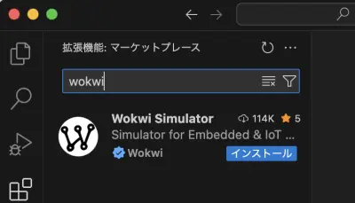
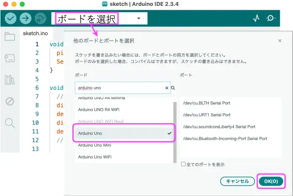
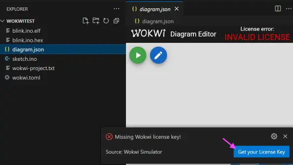
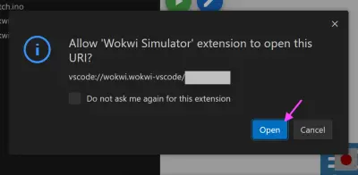

WokwiのArduinoシミュレータをVS Codeで動かす
ブラウザベースのマイコンボードシミュレータWokwiでコンパイルに時間が掛かって実行できない場合に，ローカル環境でシミュレーションを実行する方法を説明する． Wokwiの解説ページに書かれている内容と同じ．
VS Codeをインストールする
公式サイトからインストーラをダウンロードし，Visual Studio Codeをインストールする．
つぎに，VS Codeを起動して拡張機能のWokwi Simulatorをインストールする
Ctrl+Shift+P(Cmd+Shift+P) → 拡張機能をインストール(Extensions: Install Extensions)を選択- 検索ボックスに「Wokwi」を記入
- Wokwi Simulatorを選択してインストールする

VS Codeのメニューを日本語化するには，拡張機能の「Japanese Language Pack for Visual Studio Code」をインストールしてから，VS Codeを再起動する． 再起動後に「Change Language and Restart」というボタンが表示されるのでそれを押す．
Arduino IDEをインストールする
Arduino IDEをインストールする．
- 自分のPC環境に合ったDownload optionを選択する
- 任意で寄付するか，寄付せず「JUST DOWNLOAD」からインストーラをダウンロードする
- インストーラを起動してArduino IDEをインストールする
- Arduino IDEを起動して，設定画面(Preference)を開く
- 設定タブの「より詳細な情報を表示する」(Show verbose output during)の「コンパイル」(compile)にチェックを入れて「OK」
Wokwiのプロジェクトファイルを準備する
Arduino UnoにLEDとスライド抵抗を接続したサンプルプロジェクトのファイルはこちら↓
自分でプロジェクトファイルを準備する場合は下記のとおり．
シミュレーションしたいWokwiのプロジェクトページにアクセスする
- プロジェクトを新規に作成する場合は空のArduino Unoプロジェクトを開き，＋ボタンを押して必要な部品を配置して回路を組む
左上の「SAVE」ボタンのオプションから「Download project ZIP」を選択してプロジェクトファイル一式をダウンロードする
ダウンロードしたZipファイルを展開し，
sketch.inoとdiagram.jsonを作業フォルダ（仮にmyprojectとする）にコピーする作業フォルダ
myprojectに下記テキストファイルをwokwi.tomlとして保存する[wokwi] version = 1 firmware = 'sketch.ino.hex' # sketch.inoをコンパイルして生成したhexファイルのパス elf = 'sketch.ino.elf' # sketch.inoをコンパイルして生成したelfファイルのパス
Arduino IDEでスケッチをコンパイルする
ダウンロードしたWokwiプロジェクトファイルのZipを展開する
sketch.inoをArduino IDEで開く．フォルダを自動に作成するか？と聞かれるのでyes「ボードを選択」→「他のボードとポートを選択」→ボード「Arduino Uno」を選択して「OK」．ポートは選択しなくてよい 
Arduino IDE左上の✔ボタンを押してコンパイルする
正常にコンパイルできたら，下記のようなメッセージが表示されるはず
... "C:\\Users\\myname\\AppData\\Local\\Arduino15\\packages\\arduino\\tools\\avr-gcc\\7.3.0-atmel3.6.1-arduino7/bin/avr-size" -A "C:\\Users\\myname\\AppData\\Local\\arduino\\sketches\\C935736F0A842F5A12D3938477EAEB16/sketch.ino.elf" 最大32256バイトのフラッシュメモリのうち、スケッチが1984バイト（6%）を使っています。 最大2048バイトのRAMのうち、グローバル変数が194バイト（9%）を使っていて、ローカル変数で1854バイト使うことができます。... /Users/myname/Library/Arduino15/packages/arduino/tools/avr-gcc/7.3.0-atmel3.6.1-arduino7/bin/avr-size -A /Users/myname/Library/Caches/arduino/sketches/AEAF276E5C3B94E2BB709B5EBC40BF48/sketch.ino.elf 最大32256バイトのフラッシュメモリのうち、スケッチが2224バイト（6%）を使っています。 最大2048バイトのRAMのうち、グローバル変数が188バイト（9%）を使っていて、ローカル変数で1860バイト使うことができます。コンパイルメッセージに
sketch.ino.elfが含まれるフォルダの場所が表示される． ファイルパスが表示されない場合は，Arduino IDEの設定で「より詳細な情報を表示する」の「コンパイル」にチェックsketch.ino.elfを含むフォルダをエクスプローラ(ファインダー)で開く．- Windows:
Win+Eでエクスプローラを開いて，Ctrl+Lでアドレス欄に移動先フォルダのパスをコピペする．フォルダの区切りが\\となっているので，\に修正する - macOS: ファインダーで
Cmd+Shift+G→移動先フォルダのパスをコピペする
- Windows:
sketch.ino.elfとsketch.ino.hexを作業フォルダmyprojectにコピーする
VS CodeでWokwiシミュレータを起動する
ブラウザでWokwiにアクセスし，右上の「SIGN UP/SIGN IN」ボタンからログインしておく．アカウントを作成していない場合は作成する
VS Codeで作業フォルダ
myprojectを開くdiagram.jsonをVS Code上で開くとシミュレータ画面が表示されるライセンスが無いという警告が表示されるので「Get your License Key」をクリックする 
ブラウザでWokwiのページが開くので「GET YOUR LICENSE」を選択
Caution商用利用の場合は有料ライセンスの購入が必要
ブラウザからVS Code画面に遷移して．．．
VS Code上でライセンスを受け入れるとシミュレータが起動できるようになる 
スケッチファイルを編集するには，Arduino IDEやWokwiページでsketch.inoを編集する． 編集後のsketch.inoを上記の手順でコンパイルし，myproject以下のhexファイルとelfファイルを更新する． 回路を変更する場合は，Wokwiページで編集し，diagram.jsonを差し替える．